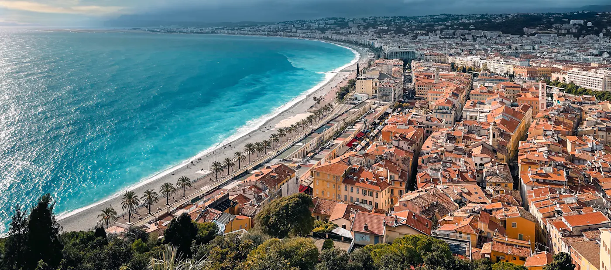

Nice
Dépannage à domicile dans tous les quartiers et maintenance pour les entreprises de la Métropole.
Informatique à NiceNous intervenons à domicile et en entreprise sur tout le littoral des Alpes-Maritimes, à Monaco, dans l'arrière-pays niçois et dans l'est du Var. Plus haut dans les vallées, nous venons sur rendez-vous, et l'assistance à distance est disponible partout en France.

Chargement de la carte…
Survolez la carte ou tapez le nom de votre commune : nous vous indiquons si nous intervenons chez vous, et dans quelles conditions.
Chaque secteur a ses particularités : retrouvez nos services et les communes desservies autour de chez vous.
Dépannage à domicile dans tous les quartiers et maintenance pour les entreprises de la Métropole.
Informatique à NiceRésidents, résidences secondaires et sociétés monégasques, de Monte-Carlo à Fontvieille.
Informatique à MonacoWi-Fi des villas, résidences secondaires et commerces de la Riviera.
Informatique à Villefranche, Beaulieu, Cap-FerratParticuliers, commerces et entreprises du pays mentonnais, jusqu'à Sospel.
Informatique à MentonAssistance à domicile et service informatique externalisé pour les Laurentins.
Informatique à Saint-Laurent-du-VarDu Cros-de-Cagnes au Haut-de-Cagnes, pour les particuliers comme pour les pros.
Informatique à Cagnes-sur-MerParticuliers, galeries, commerces et maisons d'hôtes des villages voisins.
Informatique à VenceLevens, Contes, Carros, L'Escarène : dépannage, connexion internet et télétravail.
Informatique dans l'arrière-pays niçoisDépannage à domicile et support informatique pour les start-ups de la technopole.
Informatique à Antibes et Sophia AntipolisParticuliers, commerces, hôtels et agences, du Suquet à La Bocca.
Informatique à CannesMaisons, villas et entreprises entre Cannes, Grasse et Sophia.
Informatique à Mougins et au CannetAssistance à domicile et maintenance pour les entreprises du pays grassois.
Informatique à GrasseL'est du Var et le pays de Fayence, sur rendez-vous et à distance.
Informatique à Fréjus et Saint-RaphaëlNotre zone principale couvre la côte et l'arrière-pays proche, à environ 30 minutes du littoral.
Votre commune n'apparaît pas ? Dans le haut pays (vallées de la Tinée, de la Vésubie, de la Roya…), nous intervenons sur rendez-vous. Contactez-nous.

Où que vous soyez, nous pouvons prendre la main sur votre ordinateur de façon sécurisée pour résoudre votre problème.